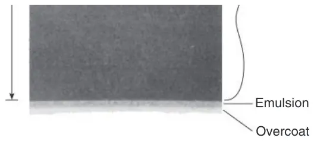
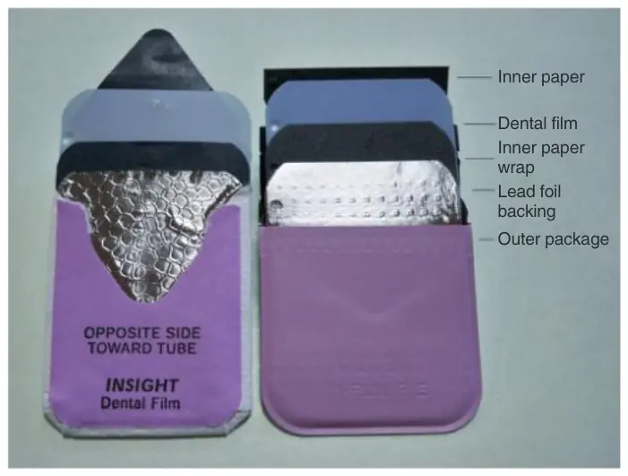

نسخه استخراجشده؛ ترجمه یا تأیید علمی انجام نشده است. وضعیت: captured
نخست یک تفکیک بنیادی که کل بحث گیرندههای دیجیتال را سازمان میدهد: گیرندههای دیجیتال «فناوریهای گوناگونی را در بر میگیرند... سودمندترین تمایز، تمایز میان دو فناوری اصلی است:»

فیلم: «هیچ آمادهسازیای لازم نیست»، «ابزارهای نگهدارندهی عمومی فراوانی در دسترساند»، و مزیت مهمش: «فیلم را میتوان برای تطبیق با آناتومی خم کرد.»
CCD/CMOS: «۱. غلاف پلاستیکی محافظ روی پوشش گیرنده گذاشته شود، ۲. گیرنده باید به رایانه وصل باشد و اطلاعات شناسایی بیمار وارد نرمافزار شود.» و در جایگذاری: «نگهدارندهی تخصصی مخصوص گیرندهی همان سازنده ممکن است گزینهها را محدود کند»، «انعطافناپذیری و حجم گیرنده گزینههای جایگذاری را محدود میکند»، «کابل گیرنده باید با دقت از دهان بیمار بیرون هدایت شود»، و «ناراحتی بیمار محتملتر از فیلم یا PSP است.»
PSP: «۱. صفحات پاک شوند، ۲. صفحات در پلاستیک محافظ بستهبندی شوند.» و در جایگذاری: «بسیاری از نگهدارندههای بهکاررفته برای فیلم را میتوان برای صفحات PSP سازگار کرد» ولی هشدار: «خم کردن گیرنده ممکن است آن را بهطور برگشتناپذیر آسیب بزند.»
پرتوگیری: فیلم و PSP «پرتوگیری ساده»، ولی CCD/CMOS «رایانه باید پیش از پرتوگیری فعال شود».
و پردازش — بزرگترین تفاوت سه فناوری:
و برای همهی گیرندههای دیجیتال یکسان است: «۱. اتاقی با نور ملایم برای فعالیتهای تفسیر بهینه است، ۲. رایانه با نرمافزار مناسب و نمایشگر با تفکیک کافی لازم است؛ مشاهده به محل رایانه محدود میشود، ۳. لپتاپ انعطاف جایگذاری رایانه را بیشتر میکند، ۴. اندازهی نمایشگر شمار تصاویر قابل مشاهدهی همزمان را محدود میکند.»
و در تکثیر تصویر، تفاوت چشمگیر است: برای فیلم «کیفیت تکثیر همیشه پایینتر از اصل است و گاهی غیرتشخیصی»، ولی برای دیجیتال «نسخههای الکترونیکی را میتوان روی رسانههای گوناگون بدون افت کیفیت ذخیره کرد» — هرچند «خروجی روی فیلم یا کاغذ پایینتر است و اغلب غیرتشخیصی، مگر با ترکیب مناسبی از چاپگر و کاغذ یا فیلم پرتفکیک».
این رتبهبندیها را یکییکی بخوان — اغلب پرسیده میشوند:

و نکتهی بالینیاش: «حدود تفکیک سامانههای دیجیتال هنگام بزرگنمایی این تصاویر بهآسانی دیده میشود. با بزرگنمایی، ظاهری بلوکی یا پیکسلی آشکار میشود.» و یک عدد: «تفکیک سامانههای پانورامیک بهدلیل حرکت مکانیکی، به حدود ۵ جفتخط بر میلیمتر محدود است.»
رتبهبندی: «PSP بسیار بیشتر از CCD، و CCD مساوی یا بیشتر از CMOS، و هر سه بیشتر از فیلم.»
و اکنون یک هشدار بالینی مهم: «بهدلیل عرضدید وسیع PSP و «بهینهسازی» خودکار روشنایی و کنتراست توسط نرمافزار دریافت تصویر، استفاده از پرتوگیری بیشتر از آنچه لازم است ممکن میشود» — یعنی تصویر خوب به نظر میرسد در حالی که بیمار دوز اضافی گرفته است.
ابعاد: «برای سطح تصویربرداری برابر، فیلم مساوی PSP و هر دو کوچکتر از CCD که مساوی CMOS است.» و دلیلش: ««سطح فعال» گیرندههای CCD و CMOS کوچکتر از سطح کل است، بهدلیل سایر اجزای الکترونیکی درون محفظهی پلاستیکی.»
زمان دریافت تصویر: «CCD مساوی CMOS و هر دو بسیار سریعتر از PSP که مساوی فیلم است.» و اهمیت بالینیاش: «دریافت سریع تصویر ممکن است در روشهای اندودنتیک یا حین جایگذاری ایمپلنت مهم باشد.»
و اکنون گزارهای که شاید شگفتزدهات کند: «کیفیت ذهنی با فیلم بهترین است، وقتی با دقت پرتودهی و بهخوبی پردازش شود.» ولی از نظر بالینی: «تصویربرداری دیجیتال و فیلمی در کاربردهای تشخیصی رایج، تفاوت معناداری ندارند.»
و دربارهی تنظیم و پردازش تصویر: «ظاهر تصاویر دیجیتال را بهبود میدهد» ولی از نظر بالینی: «وقت میگیرد؛ ممکن است عملکرد تشخیصی را بهبود ندهد.»
هزینه: «هزینههای اولیهی سامانههای دیجیتال بیشتر از فیلم است. هزینههای بعدی بسته به فرسودگی یا سوءاستفاده از گیرنده بسیار متفاوت است.» و هشدار: «برآورد سازندگان از طول عمر گیرندههای قابل استفادهی مجدد ممکن است بیش از حد خوشبینانه باشد.»
اتکاپذیری: «مشکلات مکانیکی بر سامانههای PSP دیجیتال و فیلمی اثر میگذارد. اتکاپذیری نرمافزار میان سازندگان بسیار متفاوت است. تغییر در اجزا و نرمافزارهای بیارتباط رایانه میتواند سامانههای دیجیتال را دچار اختلال کند.»
ذخیره و بازیابی: «پشتیبانگیری و امنیت داده برای سامانههای دیجیتال حیاتی است.» و هر دو فناوری آسیبپذیرند: «فیلمها ممکن است اشتباه بایگانی و گم شوند یا با شرایط بد نگهداری آسیب ببینند. دادههای دیجیتال ممکن است بر اثر خرابی منبع تغذیه یا رسانهی ذخیره و خطای اپراتور از دست بروند.»
نخست یک واقعیت دربارهی مقایسه: «در حال حاضر هیچ استاندارد ردهبندی برای گیرندههای دیجیتال دندانی وجود ندارد. در نتیجه، حساسیت گزارششدهی سامانهها توسط سازندگان تجهیزات بهسختی قابل مقایسه است، و عملکرد قابل دستیابی در کار روزمره ممکن است اغراقآمیز باشد.»
و اعداد دوز:
و دو راهی که دیجیتال میتواند دوز را بالا ببرد — اینها را حتماً بدان:
نوع سؤال: ساخت کلمه · 7 خانه
حروف منبع: ی · ا · ی · ن · ر · ت · پ
نوع سؤال: ساخت کلمه · 6 خانه
حروف منبع: س · ع · ت · ی · ر · ر